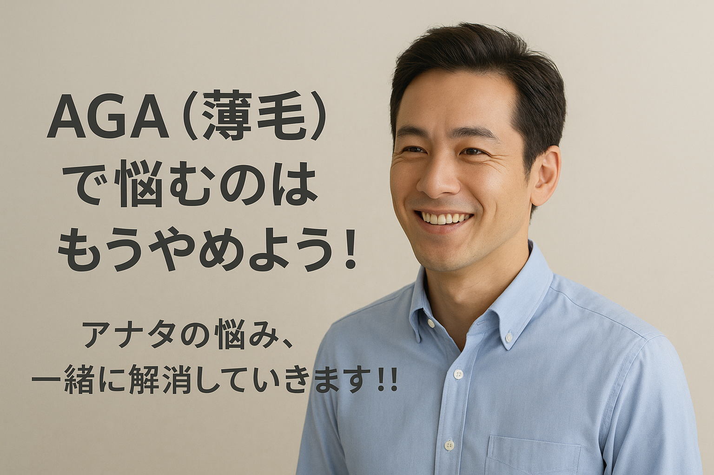
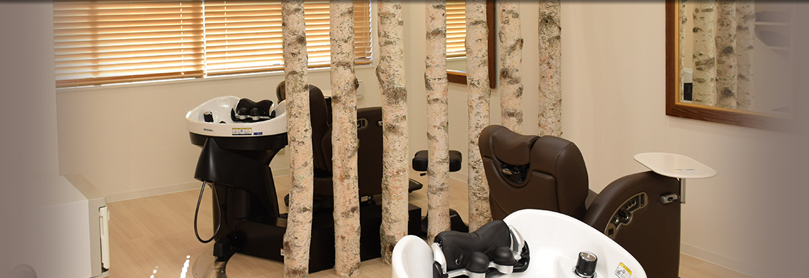
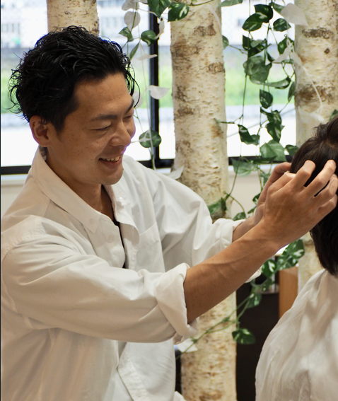
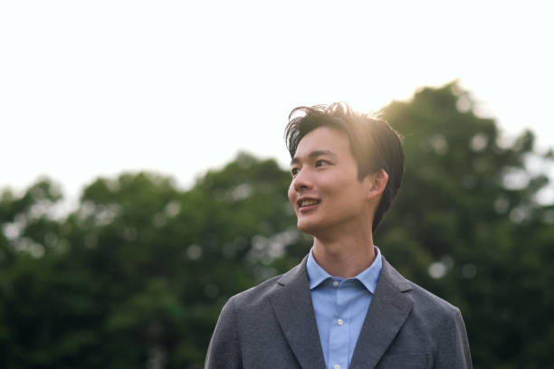

予約時間はアナタの貸切り。周りの視線が気にならないプライベート空間。
AGAや薄毛の知識が豊富な男性美容師が最初から最後まで1対1で施術。
薄毛が目立ちにくいカットはもちろん、スタイリング方法まで丁寧にレクチャー。


薄毛を気にするあまり、自分だけで解決策を探す人が多いですが、実はその多くが逆効果です。
プロに相談し、正しい方法を知ることで、“薄毛が気にならないスタイル”を創ることはできるんです。
髪が細くなってきても、薄くなってきても「自分らしいカッコいい髪型」は作れます！
なぜなら、薄毛を目立たなくするポイントは“髪の量ではなくスタイルの作り方”だからです。
白詰草で、あなたに合った最高のスタイルを手に入れませんか？

白詰草_美容室_津山市 / 1987/02/10 生まれ
好き：漫画（ワンピース）、ゲーム（息子とモンハン）、ワイン、旅行
苦手：虫・方向音痴
スポーツ歴：野球・サッカー・バスケ・ラグビー
資格：美容師免許／管理美容師免許／書道5段／FP2級
こんにちは
白詰草のホームページをご覧頂きありがとうございます。
白詰草の矢山です。
僕の中で髪型は人からの印象を良くしてくれるのはもちろん、
自分のモチベーションや自信を高めて
人生を豊かにしていく１つの要因だと考えています。
髪型が変われば自信が付き、
顔付きや姿勢もキリッとして内面までもカッコよくなっていく、
髪型にはそんな力があると思うんです。
だから、薄毛で諦めている人は
本当に勿体ない事をしているんです！
今、アナタがコレを読んでいるのも何かのご縁です。
最初の一歩は勇気がいると思いますが、
勇気を出してご来店（ご予約）頂ければ
全力でアナタの状態に合う素敵なスタイルにしていきますので
是非ご来店お待ちしております！
美容院の入り口は階段を上がって頂き2階になります。ご来店頂きましたら荷物をお預かりして、カウンセリングシートをご記入頂きます。完全予約制ですのでお待たせする事もございません。
ご記入頂いたカウンセリングシートを元に丁寧にカウンセリングさせて頂きます。アナタの悩みや希望をしっかりとお伺いして今の髪の状態や骨格、お顔や服装、ライフスタイルなどに合わせたスタイルをご提案します。
状態に合わせた適切な施術をする事で再現性の高いアナタに合ったスタイルを創っていきます。施術後は健康な髪を生やしていく為には土台になる頭皮環境を整える為に擦るシャンプーではなくヘッドスパをしながら頭皮を整えていきます。
スタイリングをしながらしっかりとやり方を説明していき、ご希望の方は説明している所を動画で撮り後で送らせて頂く事も可能です。
お会計とご希望の場合は次のご予約（次回予約）をお取り頂く事も可能です。
強制ではないですが、1ヵ月後に状態を確認させて頂き、乾かし方やスタイリングを実際にやってもらい改善できる所があればお伝えさせて頂きます。
悲しい事ですが現在AGA（薄毛）をビジネスチャンスとして捉えている病院が増えてきています。
「薬を飲み続ける」「毎月通わないといけない」「治療をやめたら元に戻る」などと病院を間違えると毎月高額な費用がかかる事もあります。
それに本来は治療をしていきながら生活習慣や食生活を改善していけば減薬や断薬も可能なはずなのですが、通い続けてもらった方が儲かるからという理由でそこを伝えない病院も多いのが現状です。
そこで僕が個人的にAGA治療をしている病院の先生に話を聞きAGAをビジネスではなく医療として考えている信頼できる病院見つける事ができました。
その病院では薬の料金も良心的で減薬、断薬も視野に入れて相談にのってくれる病院です。
その病院と先生を紹介できますのでAGA治療も視野に入れながらカットなどのスタイル創りや扱い方と並行して改善していきたい方はお気軽にご相談下さい。
AGA治療のやり方や費用、長期的な視点での進め方などもアナタの状態やライフステージに合ったお話もさせて頂けると思います。
他にも分からない事や聞きたい事、不安なことがあればお問い合わせください。
LINEなどが苦手な方は電話でも全然大丈夫ですのでお気軽にお問い合わせ下さいね。